Socho tum ek professional data dashboard build kar rahe ho. Tumhe decide karna hai ki kab single Matplotlib ax par plot draw karna hai aur kab Seaborn ke smart figure-level wrappers (relplot, displot, catplot) ko pura canvas delegate karna hai.
Is lesson me hum Matplotlib Figure vs Axes ka exact internal structure, ax= parameter ki working, return types ki reality, aur common anti-patterns ko natural Hinglish me step-by-step master karenge!
Seaborn sikhne wale 90% students ka sabse bada confusion hota hai: "Jab main plt.title() likhta hoon toh title kahan lagta hai? Aur sns.scatterplot() me ax= kyu pass kar sakte hain jabki sns.relplot() me ax= likhne par error aa jata hai?"
Is confusion ko hamesha ke liye khatam karne ke liye hume Matplotlib ki underlying architecture samajhni hogi, kyunki Seaborn koi separate rendering engine nahi hai — Seaborn Matplotlib ke kandhon par khada ek sophisticated statistical wrapper hai!
Socho tum ek art gallery me khade ho:
figsize=(width, height)), background color, DPI resolution, aur super-title (fig.suptitle()) hota hai. Figure akela data points draw nahi karta; yeh sirf ek container hai.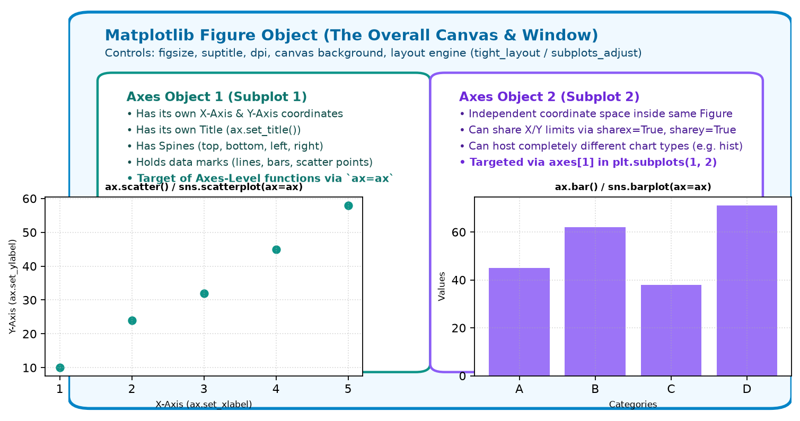
Figure object; inner white cards represent two distinct Axes objects hosting independent coordinate systems.Jab bhi aap koi Seaborn chart draw karte hain, internally do baatein ho sakti hain:
ax, iske andar scatter plot draw kar do." Function chupchap us ax par points plot kar deta hai aur wahi ax return karta hai.FacetGrid object return karta hai.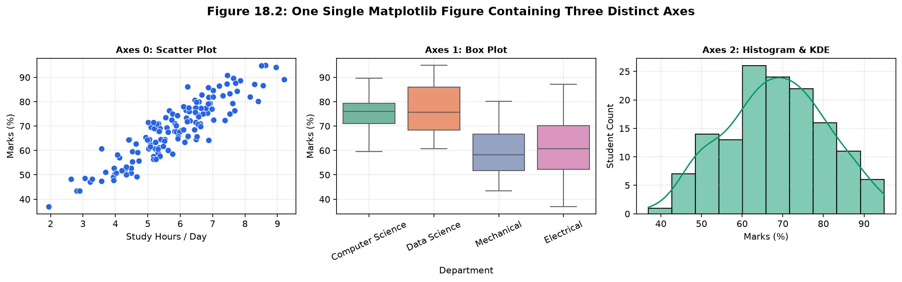
Yeh Matplotlib ka standard object-oriented paradigm hai jo har data scientist ko aana chahiye:
import matplotlib.pyplot as plt
import seaborn as sns
import pandas as pd
# Load verified student performance dataset
df = pd.read_csv("scratch/seaborn_topic18_data/student_performance_dataset.csv")
# 1. Explicitly create Figure and 1 Axes
fig, ax = plt.subplots(figsize=(7, 4.5))
# 2. Inspect the objects created
print("Figure Object:", type(fig))
print("Axes Object: ", type(ax))
# 3. Use ax directly
ax.scatter(df["study_hours"], df["marks"], color="#0D9488", alpha=0.7, edgecolors="none")
ax.set_title("Study Hours vs Marks (Native Matplotlib on ax)", fontsize=11, weight="bold")
ax.set_xlabel("Daily Study Hours")
ax.set_ylabel("Marks (%)")
ax.grid(True, linestyle=":", alpha=0.5)
plt.show()Dekho kaise ek hi figure me alag-alag plots ko unke designated axes[i] par target kiya jata hai:
import matplotlib.pyplot as plt
import seaborn as sns
import pandas as pd
df = pd.read_csv("scratch/seaborn_topic18_data/student_performance_dataset.csv")
# Create 1 row with 3 columns of subplots
fig, axes = plt.subplots(1, 3, figsize=(14, 4.2))
fig.suptitle("University Student Analytics • 1 Figure with 3 Subplots", fontsize=13, weight="bold")
# Target Axes 0: Scatter
sns.scatterplot(data=df, x="study_hours", y="marks", color="#2563EB", ax=axes[0])
axes[0].set_title("Hours vs Marks")
# Target Axes 1: Boxplot
sns.boxplot(data=df, x="department", y="marks", palette="Set2", ax=axes[1], hue="department", legend=False)
axes[1].set_title("Marks by Department")
axes[1].tick_params(axis="x", rotation=25)
# Target Axes 2: Histogram
sns.histplot(data=df, x="marks", bins=10, kde=True, color="#059669", ax=axes[2])
axes[2].set_title("Marks Distribution")
plt.tight_layout()
plt.show()Axes-level functions Seaborn ke basic building blocks hain. Inka simple definition hai:
Ek aisi function jo kisi ek particular coordinate space (Axes) par graph draw karti hai aur almost hamesha ek ax parameter accept karti hai.
Yeh function khud koi naya figure structure invent nahi karti — jo ax aap ise doge, yeh usi ke borders ke andar plot draw karegi.
Neeche diye gaye sabhi functions purely axes-level hain:
| Visual Category | Axes-Level Function | Accepts ax=? |
Return Type | Typical Purpose |
|---|---|---|---|---|
| Relational | sns.scatterplot(), sns.lineplot() |
Yes | matplotlib.axes.Axes |
Two continuous variables ka relationship single coordinate frame me dekhna. |
| Distribution | sns.histplot(), sns.kdeplot(), sns.ecdfplot(), sns.rugplot() |
Yes | matplotlib.axes.Axes |
Single variable ka frequency distribution ya probability density plot karna. |
| Categorical | sns.boxplot(), sns.violinplot(), sns.barplot(), sns.stripplot(), sns.swarmplot(), sns.pointplot() |
Yes | matplotlib.axes.Axes |
Categories ke across values compare karna (quartiles, medians, aggregates). |
| Matrix | sns.heatmap() |
Yes | matplotlib.axes.Axes |
2D correlation matrix ya grid heatmap draw karna. |
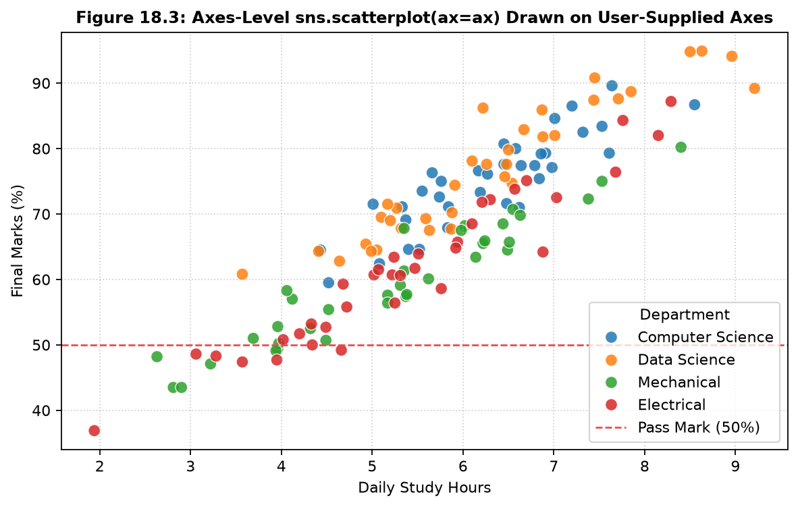
sns.scatterplot(ax=ax) • Explicit user-supplied Axes par baseline threshold line aur custom legend ke sath render kiya gaya hai.axJab aap likhte hain:
fig, ax = plt.subplots(figsize=(8, 5))
sns.scatterplot(data=df, x="study_hours", y="marks", ax=ax)Toh step-by-step kya hota hai?
plt.subplots() ek naya Figure aur ek naya ax allocate karta hai.sns.scatterplot ko woh ax reference milta hai. Function us ax ke coordinate limits aur ticks ko data ke hisaab se adjust karta hai aur points plot karta hai.ax object return karta hai, jisse aap chaining ya further customization (jaise ax.set_title(), ax.axhline()) kar sakte hain.ax=ax pass NA karein, toh Seaborn automatically Matplotlib ka current active axes (plt.gca()) dhoond kar uspe plot draw kar deta hai.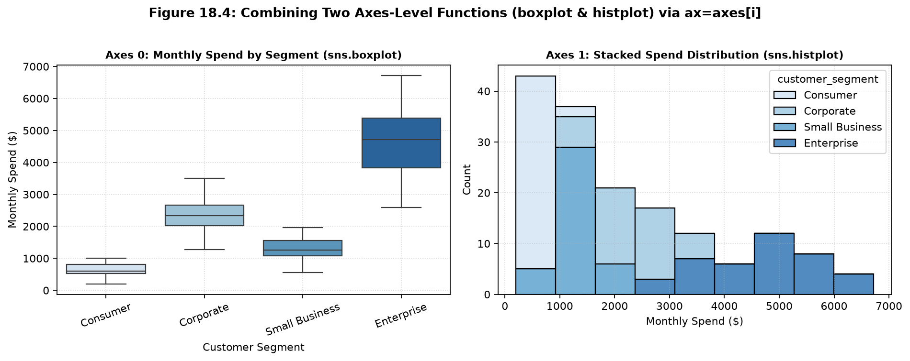
ax=axes[0] aur ax=axes[1] pass karke do completely different chart types flawlessly integrate ho gaye.import matplotlib.pyplot as plt
import seaborn as sns
import pandas as pd
df = pd.read_csv("scratch/seaborn_topic18_data/student_performance_dataset.csv")
fig, ax = plt.subplots(figsize=(7.5, 4.8))
# Draw axes-level scatter plot directly on ax
res_ax = sns.scatterplot(
data=df,
x="study_hours",
y="marks",
hue="department",
palette="tab10",
s=65,
alpha=0.85,
ax=ax
)
# Verify return type
print("Returned object is ax:", res_ax is ax) # True
# Customize via ax methods
ax.set_title("Axes-Level sns.scatterplot(ax=ax)", fontsize=11, weight="bold")
ax.set_xlabel("Daily Study Hours")
ax.set_ylabel("Final Marks (%)")
ax.axhline(50, color="#EF4444", linestyle="--", label="Pass Mark (50%)")
ax.legend(title="Department", loc="lower right")
ax.grid(True, linestyle=":", alpha=0.5)
plt.show()import matplotlib.pyplot as plt
import seaborn as sns
import pandas as pd
ecom_df = pd.read_csv("scratch/seaborn_topic18_data/ecommerce_analytics_dataset.csv")
fig, axes = plt.subplots(1, 2, figsize=(12, 4.6))
# Left Subplot (axes[0]): Categorical Boxplot
sns.boxplot(
data=ecom_df,
x="customer_segment",
y="monthly_spend",
palette="Blues",
hue="customer_segment",
legend=False,
ax=axes[0]
)
axes[0].set_title("Spend Distribution by Segment", weight="bold")
axes[0].tick_params(axis="x", rotation=20)
axes[0].set_ylabel("Monthly Spend ($)")
# Right Subplot (axes[1]): Distribution Histplot
sns.histplot(
data=ecom_df,
x="monthly_spend",
hue="customer_segment",
multiple="stack",
palette="Blues",
ax=axes[1]
)
axes[1].set_title("Stacked Spend Histogram", weight="bold")
axes[1].set_xlabel("Monthly Spend ($)")
plt.tight_layout()
plt.show()
Ab socho tumhe ek dataset ko 4 alag-alag departments ke hisaab se 4 separate panels me split karna hai.
Agar tum axes-level function use karoge, toh tumhe manual for loop likhna padega, data filter karna padega, har subplot ka title set karna padega, aur shared y-limits sync karni padengi (8+ lines of tedious code).
Is problem ko solve karne ke liye Seaborn ne design kiye Figure-Level Functions!
Ek aisi high-level function jo apna Figure aur pura layout khud manage karti hai.
Yeh functions multi-panel faceting (col=..., row=...) ko first-class support karti hain aur legend ko automatically figure ke bahar organize kar deti hain.
Golden Rule: Figure-level functions ax parameter accept NAHI karti!
Modern Seaborn me har visualization category ka ek primary Figure-Level wrapper hota hai:
| Figure-Level Function | Supported Varieties (kind=...) |
Wraps Under the Hood | Returned Object |
|---|---|---|---|
sns.relplot() |
"scatter" (default), "line" |
FacetGrid + scatterplot / lineplot |
seaborn.axisgrid.FacetGrid |
sns.displot() |
"hist" (default), "kde", "ecdf" |
FacetGrid + histplot / kdeplot / ecdfplot |
seaborn.axisgrid.FacetGrid |
sns.catplot() |
"strip" (default), "box", "violin", "bar", "point", "count" |
FacetGrid + boxplot / violinplot, etc. |
seaborn.axisgrid.FacetGrid |
sns.jointplot() |
Bivariate scatter/kde + marginal distributions | JointGrid |
seaborn.axisgrid.JointGrid |
sns.pairplot() |
All pairwise bivariate scatters + diagonal univariates | PairGrid |
seaborn.axisgrid.PairGrid |
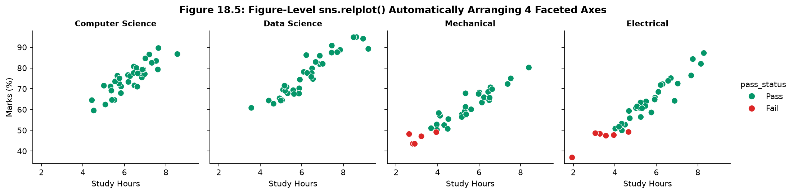
sns.relplot() • 4 academic departments ko automatically horizontal subplots me split kiya gaya hai, synchronized Y-axis scale aur clean outside legend ke sath.col="department" ya row="segment" pass karne se Seaborn khud mathematical subplots matrix bana deta hai.sharex=True aur sharey=True hota hai, jisse visual comparisons mathematically honest rehte hain.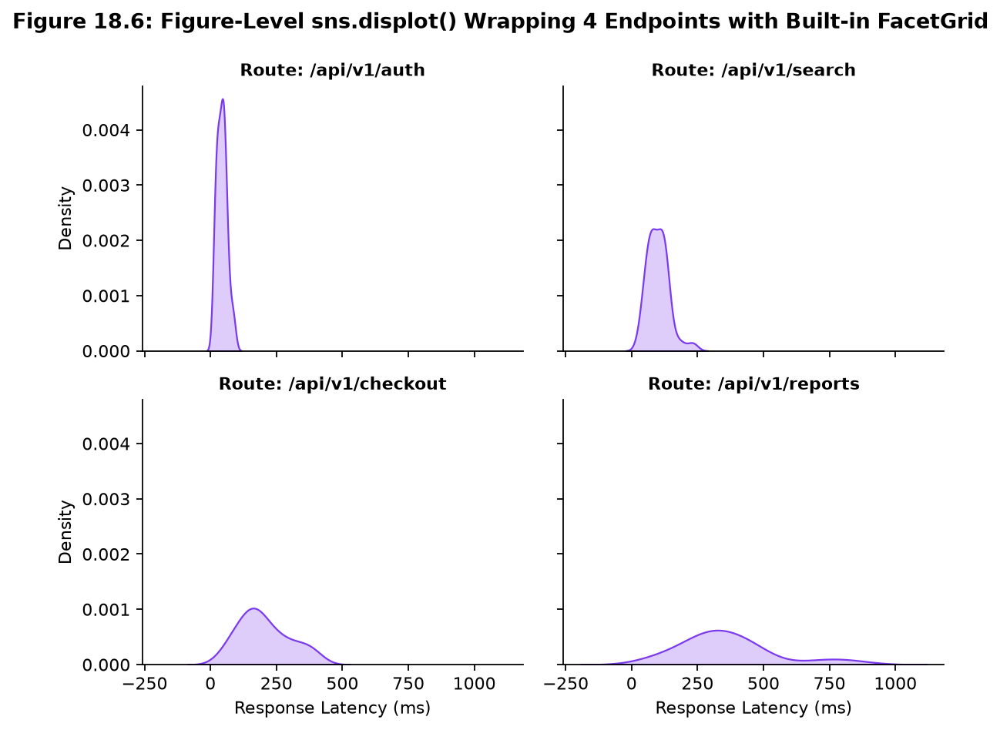
sns.displot(kind="kde", col_wrap=2) • 4 API routes ke latency profiles ko 2x2 grid me wrap kiya gaya hai built-in FacetGrid engine ke zariye.relplot()import seaborn as sns
import matplotlib.pyplot as plt
import pandas as pd
df = pd.read_csv("scratch/seaborn_topic18_data/student_performance_dataset.csv")
# Figure-level command manages its own figure & layout
g = sns.relplot(
data=df,
x="study_hours",
y="marks",
col="department",
hue="pass_status",
palette={"Pass": "#059669", "Fail": "#DC2626"},
kind="scatter",
s=65,
height=3.4,
aspect=0.95
)
# Verify return type
print("Returned object is FacetGrid:", type(g))
# Customize via FacetGrid methods
g.fig.subplots_adjust(top=0.85)
g.fig.suptitle("Faceted Student Marks by Faculty (sns.relplot)", fontsize=12, weight="bold")
g.set_axis_labels("Daily Study Hours", "Marks (%)")
g.set_titles(col_template="Faculty: {col_name}", weight="bold")
plt.show()displot()import seaborn as sns
import matplotlib.pyplot as plt
import pandas as pd
api_df = pd.read_csv("scratch/seaborn_topic18_data/api_performance_dataset.csv")
# Figure-level KDE distribution wrapped across 2 columns
g = sns.displot(
data=api_df,
x="response_time_ms",
col="endpoint",
col_wrap=2,
kind="kde",
fill=True,
color="#7C3AED",
height=3.0,
aspect=1.25
)
g.fig.subplots_adjust(top=0.88)
g.fig.suptitle("Latency Density Across Microservices (sns.displot)", weight="bold")
g.set_axis_labels("Latency (ms)", "Density")
g.set_titles(col_template="Route: {col_name}", weight="bold")
plt.show()Ab hum dono paradigms ko side-by-side compare karenge. Yeh distinction sirf theory nahi hai — yeh decide karta hai ki aapka Python code 2 lines ka hoga ya 20 lines ka, aur kya aapka visualization bina kisi bug ke render hoga!
| Evaluation Dimension | Axes-Level Functions (e.g. scatterplot) |
Figure-Level Functions (e.g. relplot) |
|---|---|---|
| Primary Purpose | Pre-existing coordinate space (Axes) par specific statistical mark draw karna. | Comprehensive multi-panel visualization create karna jisme layout aur faceting automated ho. |
| Figure & Axes Control | User Figure aur Axes provide karta hai (via ax=ax). |
Function apna Figure aur multiple Axes khud allocate aur organize karti hai. |
Supports ax= parameter? |
YES (Core feature) | NO (Passing ax= raises error or warning and is ignored) |
Faceting Support (col, row) |
NO (Aapko manual for loop aur data subsetting karni padti hai) |
YES (Built-in via col="category", row="category", col_wrap=K) |
| Return Object Type | matplotlib.axes.Axes (or subclass AxesSubplot) |
seaborn.axisgrid.FacetGrid (or JointGrid / PairGrid) |
| Legend Management | Axes ke andar place hoti hai; data points ke sath overlap hone ka risk rehta hai. | Figure window ke right margin me bahar automatically dock hoti hai. |
| Custom Matplotlib Integration | High (Native Matplotlib methods jaise ax.axhline(), ax.text() direct call hote hain). |
Moderate (Pehle g.axes array ya g.fig access karna padta hai). |
| Best Used When... | Aap ek multi-plot custom dashboard (e.g. 2x2 grid with 4 different chart families) bana rahe hon. | Aap categorical subsets ke beech relationship ya distribution comparison explore kar rahe hon. |
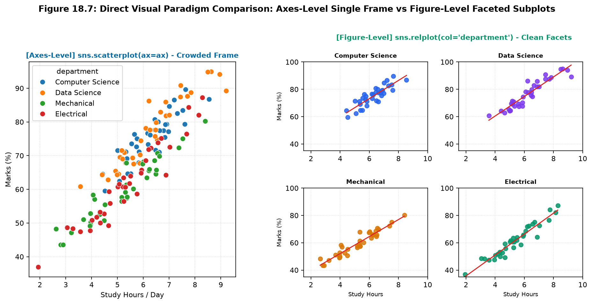
relplot() data ko 4 clean subplots me categorize karke visual clutter eliminate kar deta hai.Hamesha yaad rakhein ki Seaborn me functions pairs me aate hain. Inka data calculation logic same hota hai, lekin canvas management opposite hoti hai:
sns.scatterplot() (Axes-level) ↔ sns.relplot(kind="scatter") (Figure-level)sns.lineplot() (Axes-level) ↔ sns.relplot(kind="line") (Figure-level)sns.histplot() (Axes-level) ↔ sns.displot(kind="hist") (Figure-level)sns.kdeplot() (Axes-level) ↔ sns.displot(kind="kde") (Figure-level)sns.boxplot() (Axes-level) ↔ sns.catplot(kind="box") (Figure-level)sns.barplot() (Axes-level) ↔ sns.catplot(kind="bar") (Figure-level)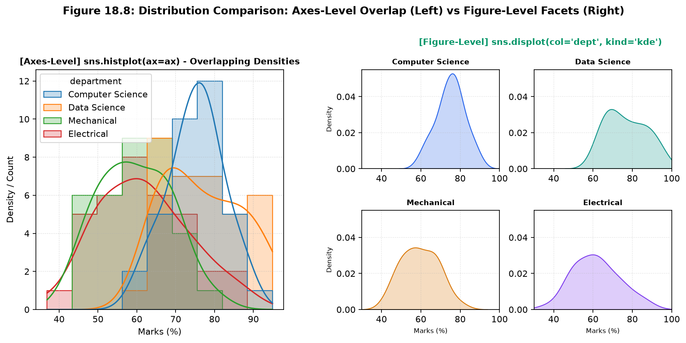
sns.histplot(ax=ax) layers overlapping density steps. [Right] sns.displot(kind="kde", col="dept") cleanly isolates each faculty into its own dedicated density frame.import seaborn as sns
import matplotlib.pyplot as plt
import pandas as pd
df = pd.read_csv("scratch/seaborn_topic18_data/student_performance_dataset.csv")
# ---------------------------------------------
# APPROACH 1: Axes-Level (Draws on supplied ax)
# ---------------------------------------------
fig, ax = plt.subplots(figsize=(6, 4))
res_ax = sns.scatterplot(data=df, x="study_hours", y="marks", hue="department", ax=ax)
ax.set_title("Axes-Level: Single Coordinate Plane")
print("Approach 1 Return Type:", type(res_ax)) # matplotlib.axes.Axes
plt.show()
# ---------------------------------------------
# APPROACH 2: Figure-Level (Manages own figure)
# ---------------------------------------------
res_fig = sns.relplot(
data=df,
x="study_hours",
y="marks",
col="department",
hue="department",
kind="scatter",
height=3.0,
aspect=1.0
)
res_fig.fig.suptitle("Figure-Level: Faceted Grid", y=1.03)
print("Approach 2 Return Type:", type(res_fig)) # seaborn.axisgrid.FacetGrid
plt.show()import seaborn as sns
import matplotlib.pyplot as plt
import pandas as pd
df = pd.read_csv("scratch/seaborn_topic18_data/student_performance_dataset.csv")
# 1. Axes-level histplot with layered curves
fig, ax = plt.subplots(figsize=(7, 4))
sns.histplot(data=df, x="marks", hue="department", element="step", kde=True, ax=ax)
ax.set_title("Axes-Level Histplot (Overlapping Densities)", weight="bold")
plt.show()
# 2. Figure-level displot with 4 separate panels
g = sns.displot(
data=df,
x="marks",
col="department",
kind="kde",
fill=True,
height=2.8,
aspect=1.1
)
g.fig.subplots_adjust(top=0.85)
g.fig.suptitle("Figure-Level Displot (Isolated Densities)", weight="bold")
plt.show()
Ab agar aapko ek heterogeneous dashboard banana ho — jahan Panel A me Scatterplot ho, Panel B me Boxplot ho, Panel C me Histogram ho, aur Panel D me Trendline ho — toh Figure-level function (jaise relplot) yeh nahi kar sakti, kyunki relplot sabhi subplots me same chart family draw karti hai!
Aise scenario me Matplotlib plt.subplots() + Axes-Level functions ka combination sabse powerful weapon ban jata hai.
Jab aap fig, axes = plt.subplots(nrows, ncols) likhte hain, toh axes ka structure dimensions ke sath badalta hai:
plt.subplots(1, 2) → axes ek 1D NumPy array hota hai: axes[0] aur axes[1].plt.subplots(2, 2) → axes ek 2D NumPy array matrix hota hai: axes[row, col] (e.g. axes[0, 0], axes[0, 1], axes[1, 0], axes[1, 1]).axes.flat use karein: for ax in axes.flat: ax.grid(True).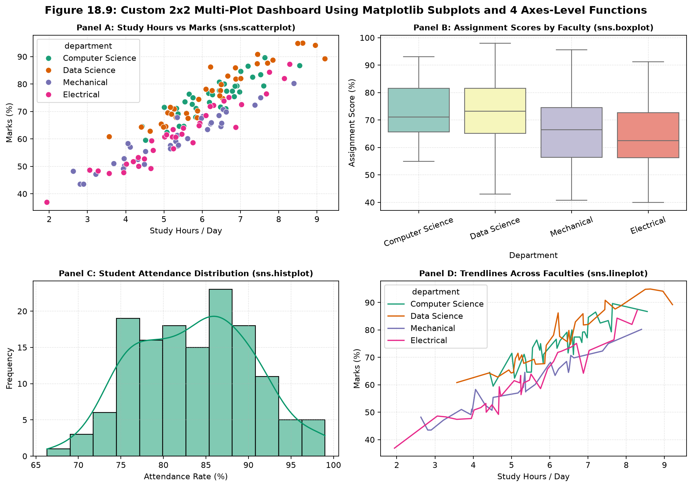
plt.subplots(2, 2) coordinate canvas par 4 completely diverse axes-level functions (Scatterplot, Boxplot, Histplot, Lineplot) integrate kiye gaye hain.
Jab aap subplots me same metric compare kar rahe hon, toh sharex=True aur sharey=True pass karna zaroori hai. Isse Matplotlib sabhi axes ki boundaries ko identical scale par lock kar deta hai, jisse visual comparisons completely accurate rehte hain:
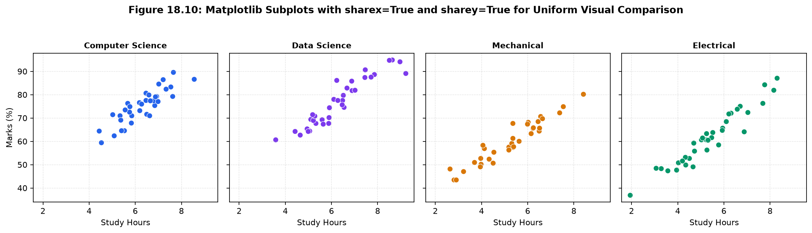
sharex=True, sharey=True enforces identical coordinate spans across all 4 departments for fair visual evaluation.import matplotlib.pyplot as plt
import seaborn as sns
import pandas as pd
df = pd.read_csv("scratch/seaborn_topic18_data/student_performance_dataset.csv")
fig, axes = plt.subplots(2, 2, figsize=(12, 8.5))
fig.suptitle("Academic Intelligence Dashboard • 4 Axes-Level Functions", fontsize=14, weight="bold")
# Panel (0, 0): Scatterplot
sns.scatterplot(data=df, x="study_hours", y="marks", hue="department", ax=axes[0, 0], s=50, palette="Dark2")
axes[0, 0].set_title("Panel A: Hours vs Marks (sns.scatterplot)", weight="bold")
axes[0, 0].grid(True, linestyle=":", alpha=0.5)
# Panel (0, 1): Boxplot
sns.boxplot(data=df, x="department", y="assignment_score", palette="Set3", ax=axes[0, 1], hue="department", legend=False)
axes[0, 1].set_title("Panel B: Assignment Scores (sns.boxplot)", weight="bold")
axes[0, 1].tick_params(axis="x", rotation=20)
axes[0, 1].grid(True, linestyle=":", alpha=0.5)
# Panel (1, 0): Histplot
sns.histplot(data=df, x="attendance", bins=12, kde=True, color="#059669", ax=axes[1, 0])
axes[1, 0].set_title("Panel C: Attendance Distribution (sns.histplot)", weight="bold")
axes[1, 0].grid(True, linestyle=":", alpha=0.5)
# Panel (1, 1): Lineplot
sns.lineplot(data=df, x="study_hours", y="marks", hue="department", ax=axes[1, 1], errorbar=None, palette="Dark2")
axes[1, 1].set_title("Panel D: Trendlines by Faculty (sns.lineplot)", weight="bold")
axes[1, 1].grid(True, linestyle=":", alpha=0.5)
plt.tight_layout()
plt.show()import matplotlib.pyplot as plt
import seaborn as sns
import pandas as pd
df = pd.read_csv("scratch/seaborn_topic18_data/student_performance_dataset.csv")
depts = ["Computer Science", "Data Science", "Mechanical", "Electrical"]
colors = ["#2563EB", "#7C3AED", "#D97706", "#059669"]
# Create 1x4 layout with shared X and Y scales
fig, axes = plt.subplots(1, 4, figsize=(14, 3.8), sharex=True, sharey=True)
fig.suptitle("Study Hours vs Marks • Shared Coordinate Limits", weight="bold", y=1.04)
for ax, d, c in zip(axes, depts, colors):
subset = df[df["department"] == d]
sns.scatterplot(data=subset, x="study_hours", y="marks", color=c, ax=ax, s=45)
ax.set_title(d, fontsize=10, weight="bold")
ax.set_xlabel("Study Hours")
ax.grid(True, linestyle=":", alpha=0.4)
axes[0].set_ylabel("Marks (%)")
plt.tight_layout()
plt.show()Multi-panel visualization banane ke do approaches hote hain:
axes[i] par plot karna.col="department", aur baki sara arrangement Seaborn ke haath chhod dena.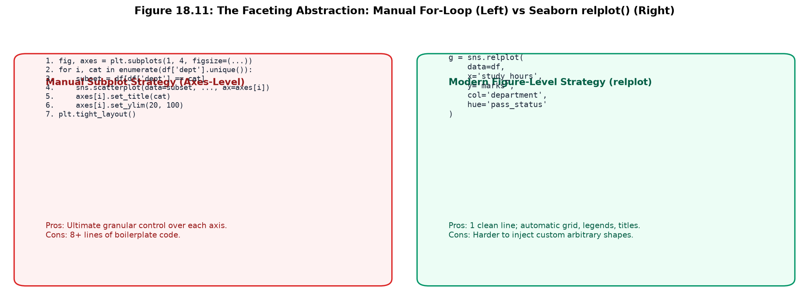
relplot() achieves the same output in a single declarative statement.
Students aksar sochte hain ki "Jab relplot itna aasan hai toh manual loop kyu seekhe?"
Answer: Agar aapko har panel me alag custom logic lagana ho — jaise Panel 1 par average line draw karni ho, Panel 2 par outlier highlight karna ho, aur Panel 3 par text annotation likhna ho — toh relplot me yeh karna mushkil hota hai. Manual axes loop aapko 100% surgical freedom deta hai!
import matplotlib.pyplot as plt
import seaborn as sns
import pandas as pd
df = pd.read_csv("scratch/seaborn_topic18_data/student_performance_dataset.csv")
depts = df["department"].unique()
fig, axes = plt.subplots(1, len(depts), figsize=(14, 3.8), sharey=True)
# Loop over subplots with custom per-panel annotations
for i, d in enumerate(depts):
sub = df[df["department"] == d]
sns.scatterplot(data=sub, x="study_hours", y="marks", color="#0284C7", ax=axes[i], s=50)
# Department-specific median mark threshold
median_val = sub["marks"].median()
axes[i].axhline(median_val, color="#DC2626", linestyle=":", label=f"Median: {median_val:.1f}%")
axes[i].set_title(d, weight="bold")
axes[i].set_xlabel("Hours / Day")
axes[i].legend(loc="lower right", fontsize=8)
axes[i].grid(True, linestyle=":", alpha=0.4)
axes[0].set_ylabel("Final Marks (%)")
plt.tight_layout()
plt.show()sns.relplot()import seaborn as sns
import matplotlib.pyplot as plt
import pandas as pd
df = pd.read_csv("scratch/seaborn_topic18_data/student_performance_dataset.csv")
# 1-Line high-level figure command with automatic labels and legend
g = sns.relplot(
data=df,
x="study_hours",
y="marks",
col="department",
hue="pass_status",
kind="scatter",
palette={"Pass": "#10B981", "Fail": "#EF4444"},
s=65,
height=3.4,
aspect=0.95
)
g.set_axis_labels("Daily Study Hours", "Marks (%)")
g.set_titles("Faculty: {col_name}", weight="bold")
plt.show()Pehle practical scenario me hum 140 college students ka academic telemetry data analyze kar rahe hain across 4 engineering departments: Computer Science, Data Science, Mechanical, aur Electrical. University administration yeh janna chahti hai ki daily study hours marks ko kis hadd tak predict karte hain aur pass/fail status ka threshold kya hai.
Overall dataset me study hours aur marks ka correlation exceptionally strong hai: r = 0.9070, jisme overall pass rate 91.4% hai. Lekin departmental faceting reveal karti hai ki learning dynamics identical nahi hain:
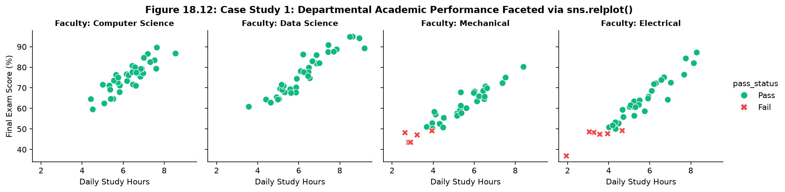
sns.relplot(col="department") isolates each faculty into its own column, with green points indicating passing students and red points highlighting academic intervention candidates.| Department | Sample Size (N) | Mean Score (%) | Hours vs Marks (r) | Recommended Analysis Paradigm |
|---|---|---|---|---|
| Computer Science | 35 | 75.11% | 0.8686 | Figure-Level (relplot): Fast cohort comparison across faculties. |
| Data Science | 35 | 76.85% | 0.9383 | Figure-Level (relplot): Parallel slope inspection. |
| Mechanical | 35 | 59.52% | 0.9539 | Axes-Level (ax.axhline): Injecting custom 50% passing benchmarks. |
| Electrical | 35 | 61.65% | 0.9602 | Axes-Level (ax.axhline): Precise institutional grading annotations. |
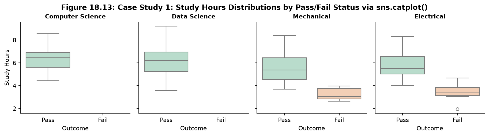
sns.catplot(kind="box", col="department") demonstrates that across every single department, passing students median study hours exceed failing peers by > 2.5 hours/day.import matplotlib.pyplot as plt
import seaborn as sns
import pandas as pd
df = pd.read_csv("scratch/seaborn_topic18_data/student_performance_dataset.csv")
fig, ax = plt.subplots(figsize=(7.5, 4.5))
# Axes-level scatter on supplied ax
sns.scatterplot(
data=df,
x="study_hours",
y="marks",
hue="department",
style="pass_status",
palette="Dark2",
s=65,
ax=ax
)
# Granular axes customization
ax.axhline(50, color="#DC2626", linestyle="--", linewidth=1.5, label="Institutional Pass Mark (50%)")
ax.set_title("Student Study Hours vs Marks • Axes-Level Approach", weight="bold")
ax.set_xlabel("Daily Study Hours")
ax.set_ylabel("Final Marks (%)")
ax.legend(bbox_to_anchor=(1.02, 1), loc="upper left")
ax.grid(True, linestyle=":", alpha=0.5)
plt.tight_layout()
plt.show()import seaborn as sns
import matplotlib.pyplot as plt
import pandas as pd
df = pd.read_csv("scratch/seaborn_topic18_data/student_performance_dataset.csv")
# 1-Line Figure-level faceting
g = sns.relplot(
data=df,
x="study_hours",
y="marks",
col="department",
hue="pass_status",
style="pass_status",
palette={"Pass": "#10B981", "Fail": "#EF4444"},
s=65,
height=3.4,
aspect=0.95
)
g.fig.subplots_adjust(top=0.85)
g.fig.suptitle("Faceted Academic Performance (Figure-Level relplot)", weight="bold")
g.set_axis_labels("Daily Study Hours", "Exam Score (%)")
g.set_titles(col_template="Faculty: {col_name}", weight="bold")
plt.show()Dusre real-life case study me hum 160 enterprise commercial accounts analyze kar rahe hain jisme 4 customer tiers shamil hain: Consumer, Small Business, Corporate, aur Enterprise across 4 sales regions.
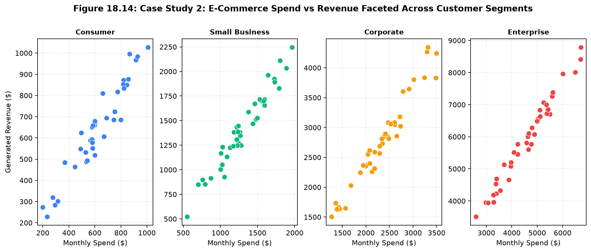
Data confirms an extraordinary linear scaling between monthly spend and generated revenue (correlation r = 0.9969). Mean monthly spend breakdown:
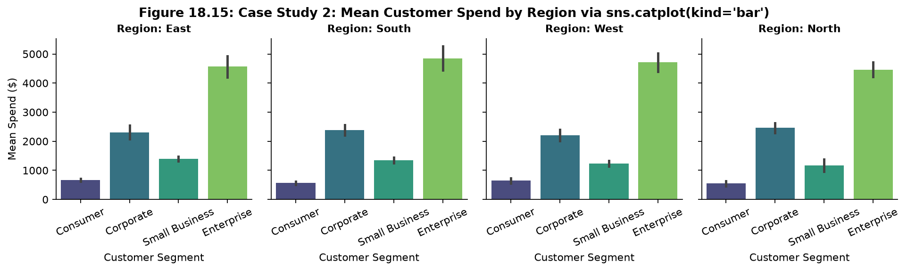
sns.catplot(kind="bar", col="region") demonstrates that Enterprise accounts drive disproportionate revenue volume across all 4 territories.import matplotlib.pyplot as plt
import seaborn as sns
import pandas as pd
ecom_df = pd.read_csv("scratch/seaborn_topic18_data/ecommerce_analytics_dataset.csv")
fig, axes = plt.subplots(1, 2, figsize=(12, 4.6))
fig.suptitle("E-Commerce Financial Overview • Axes-Level Pairing", weight="bold")
# Axes 0: Spend Boxplot
sns.boxplot(data=ecom_df, x="customer_segment", y="monthly_spend", palette="Set2", ax=axes[0], hue="customer_segment", legend=False)
axes[0].set_title("Monthly Spend by Segment", weight="bold")
axes[0].tick_params(axis="x", rotation=20)
axes[0].set_ylabel("Monthly Spend ($)")
# Axes 1: Spend vs Revenue Scatter
sns.scatterplot(data=ecom_df, x="monthly_spend", y="revenue", hue="customer_segment", palette="Set2", ax=axes[1], s=55)
axes[1].set_title("Spend vs Revenue Correlation", weight="bold")
axes[1].set_xlabel("Monthly Spend ($)")
axes[1].set_ylabel("Revenue ($)")
plt.tight_layout()
plt.show()import seaborn as sns
import matplotlib.pyplot as plt
import pandas as pd
ecom_df = pd.read_csv("scratch/seaborn_topic18_data/ecommerce_analytics_dataset.csv")
g = sns.catplot(
data=ecom_df,
x="customer_segment",
y="monthly_spend",
col="region",
kind="bar",
errorbar="se",
palette="viridis",
hue="customer_segment",
legend=False,
height=3.2,
aspect=0.95
)
g.set_axis_labels("Customer Tier", "Mean Spend ($)")
g.set_titles(col_template="Territory: {col_name}", weight="bold")
g.set_xticklabels(rotation=25)
plt.show()
Modern cloud engineering me Site Reliability Engineers (SREs) ko distributed microservices ka latency aur resource consumption track karna hota hai.
Humare paas 148 telemetry snapshots hain across 4 key API routes:
/api/v1/auth, /api/v1/search, /api/v1/checkout, aur /api/v1/reports.
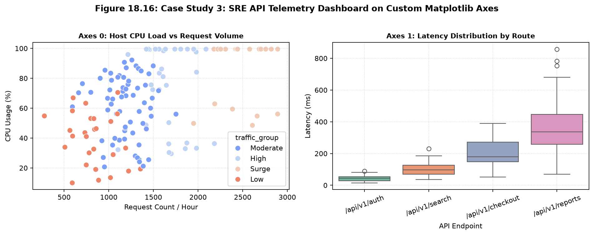
| Microservice Route | Mean Latency (ms) | Mean CPU Usage (%) | SRE Health Diagnosis | Recommended Visualization Tool |
|---|---|---|---|---|
/api/v1/auth |
42.79 ms | 32.9% | Ultra-healthy; lightweight in-memory authentication. | Axes-Level (embedded in system health tile). |
/api/v1/search |
99.33 ms | 61.5% | Moderate; standard search index load. | Axes-Level. |
/api/v1/checkout |
202.73 ms | 79.8% | Elevated; third-party payment gateway latency. | Figure-Level (faceted by traffic load). |
/api/v1/reports |
361.88 ms | 84.5% | Critical Bottleneck! Max spike: 857.8 ms during Surge traffic. | Figure-Level (displot): Isolating heavy tail probability. |
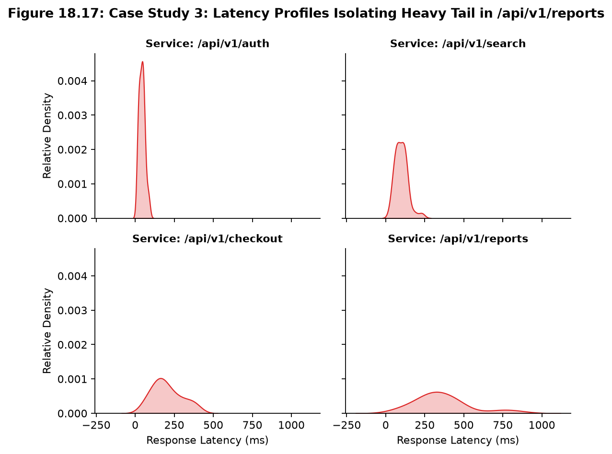
sns.displot(kind="kde", col="endpoint", col_wrap=2) highlights the extreme right-skewed degradation tail in /api/v1/reports compared to sub-50ms auth calls.import matplotlib.pyplot as plt
import seaborn as sns
import pandas as pd
api_df = pd.read_csv("scratch/seaborn_topic18_data/api_performance_dataset.csv")
fig, axes = plt.subplots(1, 2, figsize=(12, 4.6))
fig.suptitle("Cloud Microservices SRE Telemetry • Custom Axes Layout", weight="bold")
# Panel 0: Request Throughput vs CPU Load
sns.scatterplot(
data=api_df,
x="request_count",
y="cpu_usage_percent",
hue="traffic_group",
palette="coolwarm",
s=60,
ax=axes[0]
)
axes[0].set_title("Host CPU vs Request Count", weight="bold")
axes[0].set_xlabel("Hourly Requests")
axes[0].set_ylabel("CPU Usage (%)")
axes[0].grid(True, linestyle=":", alpha=0.5)
# Panel 1: Route Latency Boxplot
sns.boxplot(
data=api_df,
x="endpoint",
y="response_time_ms",
palette="Set2",
hue="endpoint",
legend=False,
ax=axes[1]
)
axes[1].set_title("Response Latency by Service", weight="bold")
axes[1].tick_params(axis="x", rotation=20)
axes[1].set_ylabel("Latency (ms)")
axes[1].grid(True, linestyle=":", alpha=0.5)
plt.tight_layout()
plt.show()import seaborn as sns
import matplotlib.pyplot as plt
import pandas as pd
api_df = pd.read_csv("scratch/seaborn_topic18_data/api_performance_dataset.csv")
# Figure-level KDE distribution isolating tail latency
g = sns.displot(
data=api_df,
x="response_time_ms",
col="endpoint",
col_wrap=2,
kind="kde",
fill=True,
color="#DC2626",
height=3.0,
aspect=1.2
)
g.fig.subplots_adjust(top=0.88)
g.fig.suptitle("Latency Tail Probability Density (sns.displot)", weight="bold")
g.set_axis_labels("Response Latency (ms)", "Empirical Density")
g.set_titles(col_template="Service: {col_name}", weight="bold")
plt.show()
Jab aap kisi plotting function ko call karte hain, toh woh Python me ek specific object return karti hai.
Agar aapko yeh pata nahi hai ki kaunsa function kya return karta hai, toh aap titles, labels, ya limits customize karte waqt AttributeError ka shikar ho jayenge!
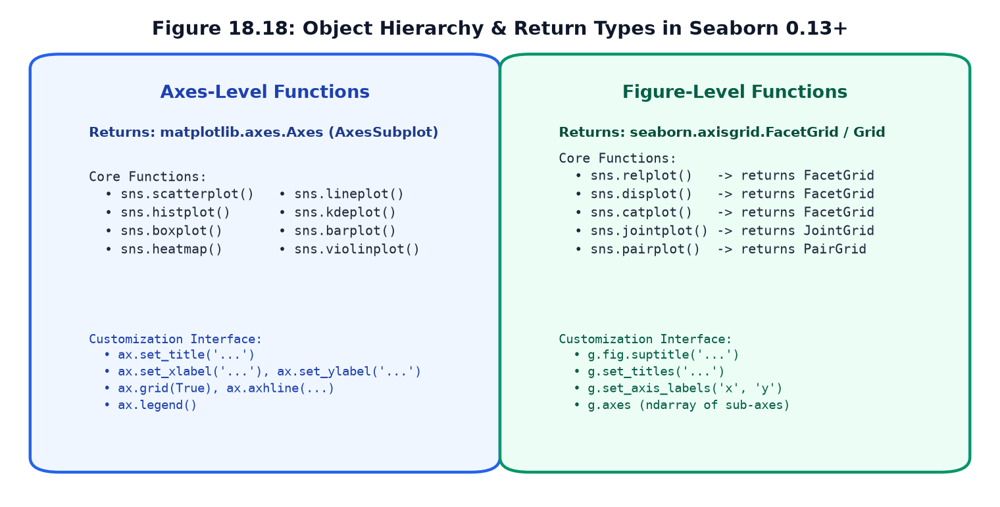
matplotlib.axes.Axes, whereas figure-level functions return seaborn.axisgrid.FacetGrid, JointGrid, or PairGrid.| Plotting Call | Exact Return Type (Seaborn 0.13+) | How to Set Title | How to Set Labels | How to Access Internal Axes |
|---|---|---|---|---|
ax = sns.scatterplot(...) |
matplotlib.axes.Axes |
ax.set_title("...") |
ax.set_xlabel("..."), ax.set_ylabel("...") |
It is already the single Axes object! |
ax = sns.boxplot(...) |
matplotlib.axes.Axes |
ax.set_title("...") |
ax.set_xlabel("..."), ax.set_ylabel("...") |
It is already the single Axes object! |
g = sns.relplot(...) |
seaborn.axisgrid.FacetGrid |
g.set_titles("...") or g.fig.suptitle("...") |
g.set_axis_labels("x", "y") |
g.axes (NumPy array of sub-axes) |
g = sns.displot(...) |
seaborn.axisgrid.FacetGrid |
g.set_titles("...") or g.fig.suptitle("...") |
g.set_axis_labels("x", "y") |
g.axes (NumPy array of sub-axes) |
g = sns.catplot(...) |
seaborn.axisgrid.FacetGrid |
g.set_titles("...") or g.fig.suptitle("...") |
g.set_axis_labels("x", "y") |
g.axes (NumPy array of sub-axes) |
g = sns.jointplot(...) |
seaborn.axisgrid.JointGrid |
g.fig.suptitle("...") |
g.set_axis_labels("x", "y") |
g.ax_joint, g.ax_marg_x, g.ax_marg_y |
g = sns.pairplot(...) |
seaborn.axisgrid.PairGrid |
g.fig.suptitle("...") |
Automatic column headers | g.axes (2D NumPy array matrix) |
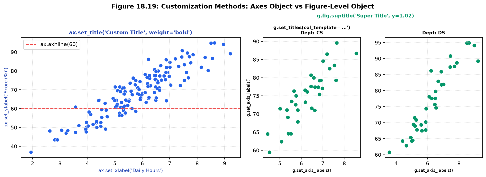
ax.set_title, ax.axhline). [Right] FacetGrid wrapper methods (g.set_titles, g.fig.suptitle).
Students aksar likhte hain: plt.title("My Title").
Danger: plt.title() sirf current active axes par title lagata hai. Agar aapne 4 subplots banaye hain, toh title sirf chauthe (last) subplot ke sar par baith jayega, jabki pure figure ka header khali reh jayega!
Hamesha explicit methods use karein: Figure-level ke liye g.fig.suptitle() aur individual axes ke liye ax.set_title().
import matplotlib.pyplot as plt
import seaborn as sns
import pandas as pd
df = pd.read_csv("scratch/seaborn_topic18_data/student_performance_dataset.csv")
fig, ax = plt.subplots(figsize=(7, 4.5))
# 1. Execute axes-level call and catch return value
returned_ax = sns.scatterplot(data=df, x="study_hours", y="marks", color="#2563EB", ax=ax, s=50)
# 2. Programmatically inspect the return object
print("Return Type:", type(returned_ax))
assert returned_ax is ax, "Returned object must be the identical Axes!"
# 3. Apply native Axes methods
returned_ax.set_title("Precision Axes Customization", fontsize=12, weight="bold")
returned_ax.set_xlabel("Daily Study Hours", fontsize=10)
returned_ax.set_ylabel("Final Score (%)", fontsize=10)
returned_ax.axhline(60, color="#EF4444", linestyle="--", label="Target Benchmark (60%)")
returned_ax.legend(loc="upper left")
returned_ax.grid(True, linestyle=":", alpha=0.5)
plt.show()import seaborn as sns
import matplotlib.pyplot as plt
import pandas as pd
df = pd.read_csv("scratch/seaborn_topic18_data/student_performance_dataset.csv")
# 1. Execute figure-level call and catch return value
g = sns.relplot(
data=df,
x="study_hours",
y="marks",
col="department",
col_wrap=2,
kind="scatter",
height=3.0,
aspect=1.2
)
# 2. Inspect returned object and underlying components
print("Main Object: ", type(g)) # FacetGrid
print("Underlying Figure: ", type(g.fig)) # matplotlib.figure.Figure
print("Underlying Axes Grid:", type(g.axes)) # numpy.ndarray
# 3. Apply FacetGrid-specific customization
g.set_titles(col_template="Faculty: {col_name}", weight="bold")
g.set_axis_labels("Daily Study Hours", "Exam Marks (%)")
# 4. Apply Figure super-title with margin adjustment
g.fig.subplots_adjust(top=0.90)
g.fig.suptitle("Departmental Performance Matrix (FacetGrid)", fontsize=13, weight="bold")
plt.show()Beginners ke codes me figure-level aur axes-level functions ko mix karte waqt kuch classic galtiyan hoti hain. Neeche diye gaye 14 critical pitfalls aur unke exact code solutions ko dhyan se study karein:
| # | Common Mistake / Antipattern | What Happens (Symptom & Error) | The Exact Code Solution |
|---|---|---|---|
| 1 | Passing ax= to a Figure-Level function |
TypeError: relplot() got an unexpected keyword argument 'ax', ya unused blank figure create ho jati hai. |
Figure-level functions me ax= kabhi na pass karein; unhe seedha call karein. |
| 2 | Using plt.figure(figsize=(...)) before relplot() |
Figure-level function apna naya figure kholti hai; aapka pehla figure khali window bankar reh jata hai. | Figure-level plots ka size height=... aur aspect=... parameters se set karein. |
| 3 | Assuming all Figure-level functions return the same type | Calling g.set_titles() on sns.jointplot() raises AttributeError. |
Remember: relplot/displot/catplot return FacetGrid; jointplot returns JointGrid. |
| 4 | Calling ax.suptitle() instead of fig.suptitle() |
AttributeError: 'Axes' object has no attribute 'suptitle'. |
Use ax.set_title() for individual subplots and fig.suptitle() for the entire canvas. |
| 5 | Calling fig.set_title() instead of fig.suptitle() |
AttributeError: 'Figure' object has no attribute 'set_title'. |
Use fig.suptitle("...") or ax.set_title("..."). |
| 6 | Incorrect 2D Subplot Indexing (e.g. axes[1] on a 2x2 grid) |
IndexError: too many indices or unexpected row selection. |
Use 2D indexing axes[0, 1] or flatten with axes.flat[1]. |
| 7 | Mixing plt.title() in a loop of subplots |
All titles overwrite each other on the last subplot. | Use axes[i].set_title("...") explicitly inside the loop. |
| 8 | Using relplot() when you need an asymmetric dashboard |
Cannot put a barplot and scatterplot in the same relplot call. |
Use fig, axes = plt.subplots(1, 2) with individual axes-level functions. |
| 9 | Legend overlapping data points in axes-level plot | Crowded points get hidden under the legend card. | Move legend outside via ax.legend(bbox_to_anchor=(1.02, 1), loc='upper left'). |
| 10 | Inconsistent Y-axis scales in manual subplot comparisons | Viewer misinterprets a small variance as huge due to zoomed-in local axis. | Pass sharey=True in plt.subplots() or manually set ax.set_ylim(). |
| 11 | Memory leaks in batch plotting loops | More than 20 figures have been opened warning, RAM spikes. |
Call plt.close(fig) or plt.close('all') at the end of each iteration. |
| 12 | Using deprecated ci=None parameter |
FutureWarning: The `ci` parameter is deprecated. Use `errorbar=None`. |
Replace ci=None with errorbar=None across all Seaborn 0.13+ code. |
| 13 | Passing palette without hue |
FutureWarning: Passing `palette` without assigning `hue` is deprecated. |
Assign hue="column_name" and set legend=False if a legend is not needed. |
| 14 | Suptitle colliding with facet headers | The top super-title text overlaps with column titles. | Add margin breathing room via g.fig.subplots_adjust(top=0.88) before suptitle. |
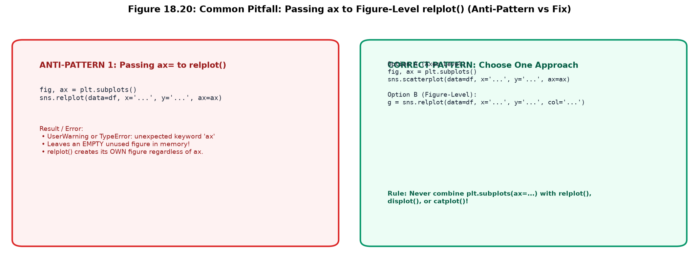
ax= to sns.relplot() leaves an empty phantom figure. [Right] Clean separation: use axes-level for subplots and figure-level for standalone faceting.import matplotlib.pyplot as plt
import seaborn as sns
import pandas as pd
df = pd.read_csv("scratch/seaborn_topic18_data/student_performance_dataset.csv")
# ------------------------------------------------------------------
# BAD CODE: Passing ax= to relplot()
# ------------------------------------------------------------------
# fig, ax = plt.subplots(figsize=(6, 4))
# g = sns.relplot(data=df, x="study_hours", y="marks", ax=ax) # BUG!
# Leaves 'ax' completely empty and opens a second window!
# ------------------------------------------------------------------
# GOOD CODE: Pick the right tool for the job
# ------------------------------------------------------------------
# If you already have an Axes:
fig, ax = plt.subplots(figsize=(6, 4))
sns.scatterplot(data=df, x="study_hours", y="marks", color="#059669", ax=ax)
ax.set_title("Correct Axes-Level Execution")
plt.show()
# If you want Seaborn to create the grid:
g = sns.relplot(data=df, x="study_hours", y="marks", col="department", height=3.0)
plt.show()import matplotlib.pyplot as plt
import seaborn as sns
import pandas as pd
df = pd.read_csv("scratch/seaborn_topic18_data/student_performance_dataset.csv")
depts = df["department"].unique()
fig, axes = plt.subplots(2, 2, figsize=(10, 7), sharex=True, sharey=True)
# SAFE PATTERN: Flatten 2D array (axes.flat) to iterate with a single index
for i, ax in enumerate(axes.flat):
d = depts[i]
sub = df[df["department"] == d]
sns.scatterplot(data=sub, x="study_hours", y="marks", color="#2563EB", ax=ax, s=45)
ax.set_title(f"Faculty: {d}", fontsize=10, weight="bold")
ax.grid(True, linestyle=":", alpha=0.4)
fig.suptitle("Safe 2D Grid Flattening via axes.flat", fontsize=12, weight="bold")
plt.tight_layout()
plt.show()Ab waqt hai practical hands-on coding ka! Neeche 7 realistic challenges diye gaye hain. Har problem ko pehle khud try karein, phir accordion click karke verified solution aur explanation check karein.
Problem: student_performance_dataset.csv load karein. Ek fig, ax = plt.subplots(figsize=(7, 4)) banayein aur sns.scatterplot() ko ax=ax pass karke study hours vs marks plot karein with hue="department".
import matplotlib.pyplot as plt
import seaborn as sns
import pandas as pd
df = pd.read_csv("scratch/seaborn_topic18_data/student_performance_dataset.csv")
fig, ax = plt.subplots(figsize=(7, 4))
sns.scatterplot(data=df, x="study_hours", y="marks", hue="department", s=55, ax=ax)
ax.set_title("Challenge 1: Axes-Level Scatter", weight="bold")
ax.grid(True, linestyle=":", alpha=0.5)
plt.show()Problem: Same dataset par sns.relplot() use karein with col="department" aur hue="pass_status". Confirm karein ki code me koi ax parameter pass nahi kiya gaya hai.
import seaborn as sns
import matplotlib.pyplot as plt
import pandas as pd
df = pd.read_csv("scratch/seaborn_topic18_data/student_performance_dataset.csv")
g = sns.relplot(
data=df,
x="study_hours",
y="marks",
col="department",
hue="pass_status",
kind="scatter",
height=3.0,
aspect=1.0
)
g.set_axis_labels("Hours", "Marks (%)")
plt.show()Problem: ecommerce_analytics_dataset.csv use karein. plt.subplots(1, 2) banayein. axes[0] par monthly spend ka sns.boxplot() draw karein aur axes[1] par monthly spend ka sns.histplot() draw karein.
import matplotlib.pyplot as plt
import seaborn as sns
import pandas as pd
ecom_df = pd.read_csv("scratch/seaborn_topic18_data/ecommerce_analytics_dataset.csv")
fig, axes = plt.subplots(1, 2, figsize=(11, 4))
sns.boxplot(data=ecom_df, x="customer_segment", y="monthly_spend", ax=axes[0])
axes[0].tick_params(axis="x", rotation=20)
sns.histplot(data=ecom_df, x="monthly_spend", kde=True, ax=axes[1])
plt.tight_layout()
plt.show()Problem: api_performance_dataset.csv par sns.displot() use karein with x="response_time_ms", col="endpoint", col_wrap=2, aur kind="hist" with kde=True.
import seaborn as sns
import matplotlib.pyplot as plt
import pandas as pd
api_df = pd.read_csv("scratch/seaborn_topic18_data/api_performance_dataset.csv")
g = sns.displot(
data=api_df,
x="response_time_ms",
col="endpoint",
col_wrap=2,
kind="hist",
kde=True,
height=2.8,
aspect=1.2
)
plt.show()Problem: Write one script that compares customer spending across 4 geographic regions using sns.catplot(kind="box", col="region") in 1 line vs standard sns.boxplot().
import seaborn as sns
import matplotlib.pyplot as plt
import pandas as pd
ecom_df = pd.read_csv("scratch/seaborn_topic18_data/ecommerce_analytics_dataset.csv")
g = sns.catplot(
data=ecom_df,
x="customer_segment",
y="monthly_spend",
col="region",
kind="box",
col_wrap=2,
height=3.0,
aspect=1.1
)
g.set_xticklabels(rotation=20)
plt.show()Problem: Create a 1x3 subplot layout using plt.subplots(1, 3) hosting a Scatter plot, a Bar plot, and a KDE plot from student_performance_dataset.csv.
import matplotlib.pyplot as plt
import seaborn as sns
import pandas as pd
df = pd.read_csv("scratch/seaborn_topic18_data/student_performance_dataset.csv")
fig, axes = plt.subplots(1, 3, figsize=(14, 4))
sns.scatterplot(data=df, x="study_hours", y="marks", color="#2563EB", ax=axes[0])
sns.barplot(data=df, x="department", y="marks", palette="Set2", hue="department", legend=False, ax=axes[1])
axes[1].tick_params(axis="x", rotation=25)
sns.kdeplot(data=df, x="marks", fill=True, color="#059669", ax=axes[2])
plt.tight_layout()
plt.show()Problem: Write a test script verifying that sns.scatterplot() returns an Axes instance while sns.relplot() returns a FacetGrid instance using Python isinstance().
import matplotlib.pyplot as plt
import seaborn as sns
import pandas as pd
from matplotlib.axes import Axes
from seaborn.axisgrid import FacetGrid
df = pd.read_csv("scratch/seaborn_topic18_data/student_performance_dataset.csv")
fig, ax = plt.subplots()
res_ax = sns.scatterplot(data=df, x="study_hours", y="marks", ax=ax)
assert isinstance(res_ax, Axes), "Must return Axes!"
plt.close(fig)
res_fig = sns.relplot(data=df, x="study_hours", y="marks")
assert isinstance(res_fig, FacetGrid), "Must return FacetGrid!"
plt.close(res_fig.fig)
print("All Return Type Assertions Passed Successfully!")import matplotlib.pyplot as plt
import seaborn as sns
import pandas as pd
api_df = pd.read_csv("scratch/seaborn_topic18_data/api_performance_dataset.csv")
fig, axes = plt.subplots(2, 2, figsize=(11, 7.5))
fig.suptitle("Production Telemetry Dashboard (4 Axes-Level Plots)", fontsize=13, weight="bold")
# (0, 0): Requests vs CPU
sns.scatterplot(data=api_df, x="request_count", y="cpu_usage_percent", hue="traffic_group", ax=axes[0, 0])
axes[0, 0].set_title("Request Volume vs CPU Load")
# (0, 1): Response Latency Boxplot
sns.boxplot(data=api_df, x="endpoint", y="response_time_ms", palette="Blues", hue="endpoint", legend=False, ax=axes[0, 1])
axes[0, 1].tick_params(axis="x", rotation=20)
axes[0, 1].set_title("Latency Distribution by Endpoint")
# (1, 0): Error Count by Route
sns.barplot(data=api_df, x="endpoint", y="error_count", palette="Reds", hue="endpoint", legend=False, ax=axes[1, 0])
axes[1, 0].tick_params(axis="x", rotation=20)
axes[1, 0].set_title("Total Error Count by Service")
# (1, 1): Latency Histogram
sns.histplot(data=api_df, x="response_time_ms", bins=15, kde=True, color="#7C3AED", ax=axes[1, 1])
axes[1, 1].set_title("Global Latency Profile")
plt.tight_layout()
plt.show()import seaborn as sns
import matplotlib.pyplot as plt
import pandas as pd
ecom_df = pd.read_csv("scratch/seaborn_topic18_data/ecommerce_analytics_dataset.csv")
g = sns.catplot(
data=ecom_df,
x="customer_segment",
y="revenue",
col="region",
kind="bar",
errorbar="se",
palette="Dark2",
hue="customer_segment",
legend=False,
height=3.2,
aspect=0.95
)
g.set_xticklabels(rotation=25)
g.set_axis_labels("Customer Tier", "Mean Revenue ($)")
g.set_titles(col_template="Territory: {col_name}", weight="bold")
plt.show()import seaborn as sns
import matplotlib.pyplot as plt
import pandas as pd
df = pd.read_csv("scratch/seaborn_topic18_data/student_performance_dataset.csv")
g = sns.relplot(data=df, x="study_hours", y="marks", col="department", height=3.0, aspect=1.0)
# Iterate over internal axes array to inject custom reference line
for ax in g.axes.flat:
ax.axhline(50, color="#EF4444", linestyle="--", linewidth=1.2, label="Pass Mark (50%)")
ax.grid(True, linestyle=":", alpha=0.5)
g.set_axis_labels("Study Hours", "Score (%)")
plt.show()import seaborn as sns
import matplotlib.pyplot as plt
import pandas as pd
ecom_df = pd.read_csv("scratch/seaborn_topic18_data/ecommerce_analytics_dataset.csv")
# JointGrid: figure-level hybrid bivariate + marginal
g = sns.jointplot(
data=ecom_df,
x="monthly_spend",
y="revenue",
hue="customer_segment",
palette="Set1",
height=6
)
print("JointPlot Return Type:", type(g)) # seaborn.axisgrid.JointGrid
plt.show()Congratulations! Aapne Seaborn ke sabse foundational architecture concept — Figure-Level vs Axes-Level Functions — par command hasil kar li hai. Is quick revision section me decision flowchart, core parameter cheat sheet, aur self-evaluation checklist provide ki gayi hai.
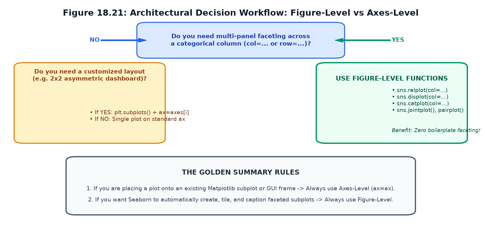
relplot(), displot(), catplot(), and plt.subplots().| Parameter | Supported In Axes-Level? | Supported In Figure-Level? | Exact Role & Significance |
|---|---|---|---|
ax |
YES | NO | Draws the visual mark directly on the designated Matplotlib Axes. |
col, row |
NO | YES | Partitions dataset across horizontal columns or vertical rows of subplots. |
col_wrap |
NO | YES | Wraps long horizontal column arrays across multiple grid rows. |
height, aspect |
NO | YES | Controls vertical height and aspect ratio per subplot facet. |
data, x, y |
YES | YES | Core data mapping parameters common across both families. |
hue, style, size |
YES | YES | Semantic visual encodings available across both paradigms. |
palette |
YES | YES | Custom color scheme mapping categories to distinct hues. |
errorbar |
YES | YES | Statistical uncertainty calculation (replaces deprecated ci in 0.13+). |
| Status | Core Concept / Mastery Objective | Self-Check Verification |
|---|---|---|
| ☐ | Figure vs Axes Distinction | Main janta hoon ki Figure overall canvas window hai aur Axes actual coordinate box hai. |
| ☐ | Role of ax Parameter | Main samajhta hoon ki Axes-level functions ax= accept karti hain jabki Figure-level functions nahi. |
| ☐ | Function Pairs Mapping | Main janta hoon ki scatterplot ka figure-level partner relplot hai aur histplot ka displot. |
| ☐ | Custom Subplots Layout | Main plt.subplots(2, 2) use karke 4 different chart families ka heterogeneous dashboard bana sakta hoon. |
| ☐ | Shared Scales (sharey) | Main samajhta hoon ki subplots me fair visual comparison ke liye sharey=True kyu zaroori hota hai. |
| ☐ | Return Object Awareness | Main janta hoon ki scatterplot returns Axes jabki relplot returns FacetGrid. |
| ☐ | Customization Methods | Main Axes par ax.set_title() aur Figure-level par g.fig.suptitle() sahi se use karta hoon. |
| ☐ | Anti-Pattern Avoidance | Main kabhi bhi sns.relplot(ax=ax) likhkar empty phantom figure create nahi karta. |
| ☐ | Subplot Array Flattening | Main 2D subplots ko loop karne ke liye axes.flat ka safe pattern use karta hoon. |
| ☐ | Decision Hierarchy | Main janta hoon ki routine faceting ke liye Figure-level choose karna hai aur complex custom dashboard ke liye Axes-level. |
import matplotlib.pyplot as plt
import seaborn as sns
import pandas as pd
df = pd.read_csv("scratch/seaborn_topic18_data/student_performance_dataset.csv")
# Clean memory loop in batch reporting pipelines
for d in df["department"].unique():
fig, ax = plt.subplots(figsize=(6, 4))
sub = df[df["department"] == d]
sns.scatterplot(data=sub, x="study_hours", y="marks", ax=ax)
ax.set_title(f"Report: {d}")
# Export and immediately release memory
fig.savefig(f"temp_report_{d}.png", bbox_inches="tight")
plt.close(fig) # Prevents RAM leaks!
print("Batch reporting executed cleanly without memory accumulation!")import seaborn as sns
import matplotlib.pyplot as plt
import pandas as pd
df = pd.read_csv("scratch/seaborn_topic18_data/student_performance_dataset.csv")
g = sns.relplot(
data=df,
x="study_hours",
y="marks",
col="department",
hue="pass_status",
palette={"Pass": "#059669", "Fail": "#DC2626"},
height=3.5,
aspect=1.0
)
g.fig.subplots_adjust(top=0.88)
g.fig.suptitle("University Student Performance Evaluation", fontsize=14, weight="bold")
# Export figure-level object with 300 DPI and tight bounding box
g.savefig("student_performance_300dpi.png", dpi=300, bbox_inches="tight")
print("Exported 300 DPI publication graphic successfully!")
Agli class me hum study karenge: Seaborn Topic 19: Custom Palettes, Legends & Visual Annotations!
Wahan hum sikhenge:
sns.color_palette()).